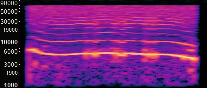
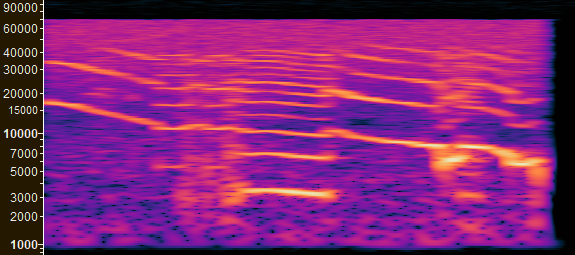
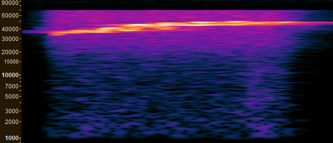
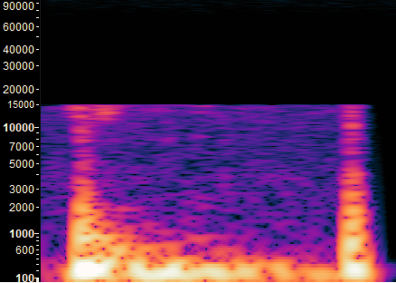
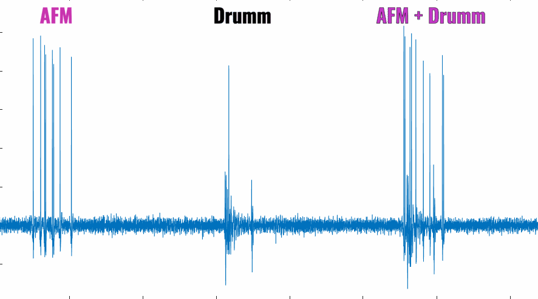

Conspecific vocalizations presented to anesthetized gerbils
Arched Frequency Modulated

Downward Frequency Modulated

Upward Sinusoidal Frequency Modulated (Pitch reduced by 24 semitones)

Drumming

In every round, three sounds were presented:
1) The complex tone
2) The drumming tone
3) Both complex and drumming tones

For each round, 3 parameters were calculated:
a) Entropy
b) Mutual Information
c) Coding Efficiency